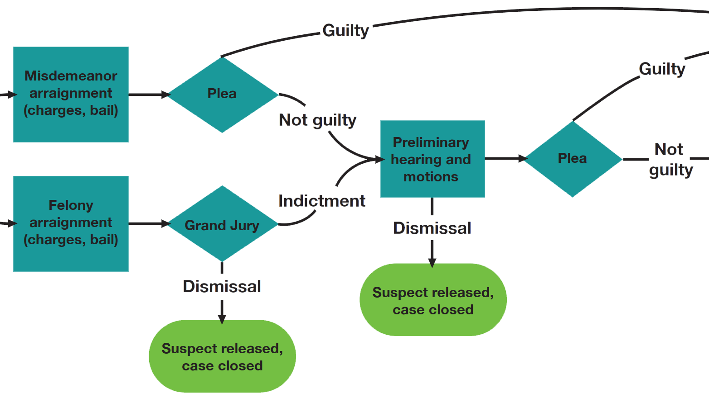

Criminal Justice Reform
Grades 7-10, 2 weeks
In this multi-week unit, students dissect the American criminal justice system by creating their own laws and applying them to real criminal cases. Optionally paired with the novel Monster by Walter Dean Myers, the unit begins with students running a mock trial for Batman using a flowchart to demonstrate the steps most criminal suspects encounter. Students then team up to design their own criminal justice systems by establishing laws on twelve topics ranging from drug policy and mandatory minimums to police body cameras and juvenile detention. Using Twine, an online tool for interactive storytelling, teams walk through seven real-world cases. The outcome of each case is determined by that team’s previously established laws and by real-time decisions made on behalf of various stakeholders.
Students quickly come to realize that decisions that initially seemed obvious can lead to unexpected consequences when applied in different situations. Students come away from this unit understanding both the need for major reform in our criminal justice system, as well as grasping many of the nuances as to why not all changes are as easy as they first appear.

Topics addressed
- The American criminal justice system – laws, policies, politics, history and examples of real criminal cases
- Primary CT concepts: decomposition and algorithmic thinking. Students approach a massive social justice topic one policy and one case at a time, slowly developing their knowledge and coming to understand the broader implications. Also, students learn the key steps criminals encounter as they are processed through the criminal justice system and how changes to that process lead to new outcomes.
Students will be able to
- Evaluate criminal justice policies and implement changes to existing laws
- Apply their modified criminal justice policies to real-world criminal cases
- Understand the elements of the criminal justice process common to all cases
Materials
-
Criminal Justice Flowchart (printed large or projected)
-
Criminal Justice Reform web app
-
Lined paper or a Google Doc assignment where students can record written responses to questions posed throughout each real-world criminal case
-
Copies of Monster by Walter Dean Myers, if students will be reading it during this unit
Prep
-
Print the criminal justice flowchart as large as you can, or decide that you will project it for your students
-
Create team codes in the Criminal Justice Reform web app. Each team of 2-4 students will need their own team code.
Suggested lesson breakdown
You can pick and choose elements of this unit you want to include – below is how we ran things, but everything is designed to be very flexible!
-
Day 1: Have students reflect on what the American criminal justice system means to them and how it is relevant to their lives or their families. Lead a conversation on these reflections and set proper expectations for the seriousness of this unit and the maturity you expect. Introduce the criminal justice flowchart, providing examples or explanations of each major element. Think of a fictional criminal you can walk through the process. As time allows, begin Monster – students can continue reading and discussing it as time allows on any subsequent day and/or can continue reading it for homework.
-
Day 2: Hold a mock trial for Batman. Have the class decide what crime Batman should be charged with (first-degree murder, manslaughter, breaking and entering, etc) and assign roles (can be team-based) for attorneys, judge, witnesses, experts, etc. Once the sentence has been given, lead a discussion on the fairness of what has transpired given what students know about Batman.
-
Day 3: Run the case of Reynolds Wintersmith (in the web app) together as a class. This case does not rely on students’ custom criminal justice systems, which they have not yet created. This is a simple case with minimal branching logic that introduces students to the style and functionality of the subsequent cases.
-
Day 4: Teams create their custom criminal justice systems in the web app. You can answer simple questions about each policy area for students, but don’t get too deep into any individual topic.
-
Days 5-10: Teams run through the remaining six cases. It’s recommended that you run the Asset Forfeiture case as a full class, as it does not rely on students’ custom justice systems. Its order does not matter, so it can be used when students need a break from running cases within their teams. There are numbered response prompts within each case that students should answer as they work through the stories. Class conversations should happen at the conclusion of each case so students can hear how other teams’ policy decisions and real-time decisions led to different outcomes for each suspect, and to discuss the real conclusion of each case. After the final case has finished, lead a final discussion on students’ takeaways given all that they have learned.
Common Core standards
-
CCSS.ELA.RH.6-8.3
Identify key steps in a text’s description of a process related to history/social studies (e.g., how a bill becomes law, how interest rates are raised or lowered).
-
CCSS.ELA.RH.9-10.3
Analyze in detail a series of events described in a text; determine whether earlier events caused later ones or simply preceded them.
-
CCSS.ELA.RH.6-8.8
Distinguish among fact, opinion, and reasoned judgment in a text.